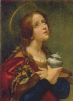

Mecdelli Meryem veya Maria Magdelana, İsa’nın en göze çarpan havarilerinden biriydi ve şüphesiz üzerinde en çok tartışılan kadın havarisiydi. Kilise İncili, İsa’nın Mecdelli Meryem’den yedi iblisi çıkardığı zaman İsa’nın takipçileri arasına katıldığını nakleder.

Muhtemelen en önemlisi, Mecdelli Meryem İsa çarmıha gerildiği sırada oradaydı ve onun yeniden dirilişinin ilk tanığıydı. İsa’nın ölümünün üçüncü sabahında, onun türbesine gitti ve orayı boş buldu. Derken İsa birden onun önüne çıktı. İlk başta Meryem onu tanımadı, ama İsa ona adıyla seslendi. İsa, onu mucizeyi diğer havarilere anlatması için görevlendirdi.
Meryem’in hayatının detayları, pek çok tartışmaya konudur. Bazı bilginler, Mecdelli Meryem’in aslında İncil’de sözü edilen diğer kadınla aynı kişi olduğunu iddia ederler. Örneğin, bir yerde Ferisi evinde yaşayan günahkâr bir kadından bahsedilir. Fahişelik yaparak günah işleyen bu kadının bir adı yoktu, ama 3. ve 4. yüzyılların başlarında bilginler, onun aslında Mecdelli Meryem olduğunu ileri sürmeye başladılar.
Meryem’in hayatının diğer teorik ana hikâyesi, onun İsa’nın eşi olduğuydu. Bu tartışmanın her iki yanında da pek az kanıt olmasına rağmen destekçileri, İsa’nın hiçbir zaman açıkça evli olmadığının söylenmediğini iddia ettiler. Meryem ona diğer havarilerden daha yakındı ve bir kadınla yalnız seyahat etmesi ve bir kadına öğretmesi o zamanlar Yahudi bir erkek için son derece nadir bir durumdu. Diğer taraftan Meryem’in İsa’nın eşi olduğunu iddia etmek için yeterince delil yoktur ve İsa’nın devrimci dünya görüşü göz önünde bulundurulduğunda onun, evli olmayan bir öğretmen olmasının çok da tuhaf olmadığı düşünülebilir.
EK BİLGİLER:
1. Paskalya’da boyalı Paskalya yumurtaları verme geleneği, Mecdelli Meryem ile Roma imparatoru Tiberius Caeser Augustus arasındaki bir etkileşimden geliyor olabilir. Meryem’in İsa çarmıha gerilirken ve yeniden dirilirken orada bulunmasından dolayı, aralarında imparatorun da olduğu bir dinleyici kitlesine Meryem İsa’nın ölüyken göğe yükseldiğini ve imparatora bir yumurta sunduğunu bildirdi. İmparator, İsa’nın göğe yükselmesinin bir yumurtanın birdenbire kırmızıya dönmesi kadar mümkün olduğunu söyledi ve yumurta birdenbire kırmızıya döndü.
2. Meryem, Roma Katolik Kilisesi, Doğu Ortodoks ve Anglikan Kiliseleri tarafından bir azize olarak takdis edilmiştir.